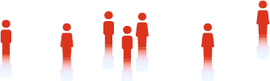

Free Personalization out of the Box
With easyrec you can personalize your applications within minutes - just for
free.
easyrec is a web application that provides recommendation services using
standardized web technologies, which can be integrated into web enabled applications.
easyrec is...
-
easy to use - personalize your application within minutes
-
easy to integrate - due to plug-ins and webservice API
-
easy to scale - due to distributed architecture
-
easy to maintain - with the available administration tool
-
for free - easyrec is going Open Source soon!
